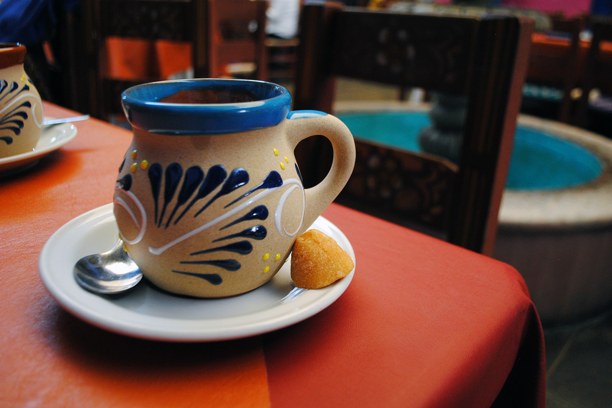
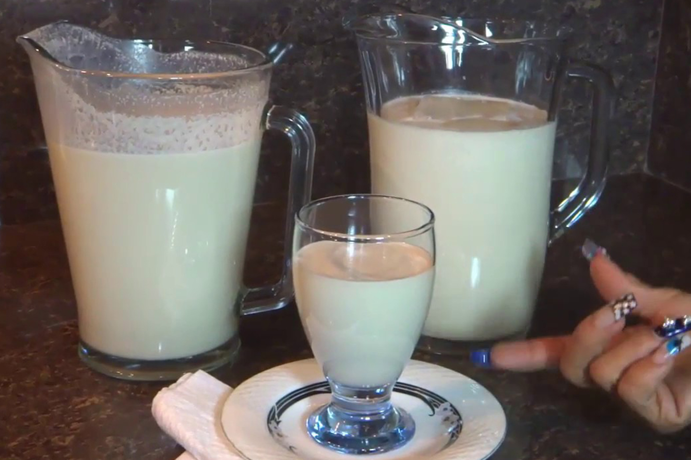
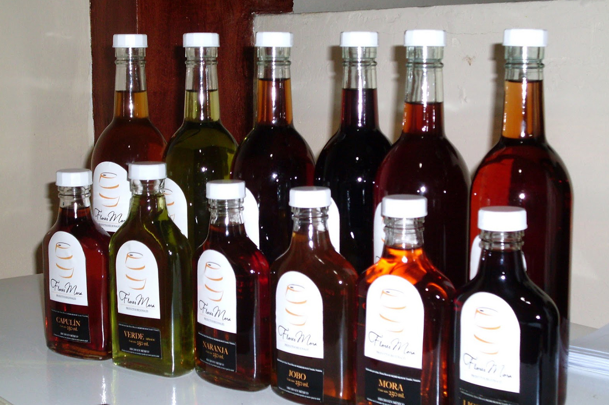
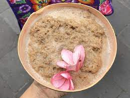

Se trata de un preparación creación de las Adelitas, donde el café es condimentado con otras especies de olor y cocido en ollas de barro, de donde se sirve a los comensales en jarritas del mismo material. Para prepararlo, solo necesitas hervir el agua que desees según la cantidad de tazas a servir, y una vez que llegue al punto de ebullición, agregarás una rama de canela, unos 200 gramos de pilloncillo y un clavo de olor. Cuando el pilloncillo derrita completamente, agregas el café molido y lo mezclas. Dale unos minutos para que se asiente y luego cuela para servir.
Recomendado:Cafeteria
Av Francisco I Madero, Veracruz, Coatzacoalcos
El origen de esta bebida se remonta a las épocas de los jornaleros, quienes luego del trabajo se preparaban este brebaje con licores de caña y frutas, como una forma de reponer energía y recuperarse. Su nombre se debe a que quienes lo preparaban y consumían describían que los hacía sentir ‘como toros’. Para prepararlo necesitas unos 250 gramos de crema de cacahuate, con una lata de leche evaporada, 1 lata de leche condensada, una de leche entera y 2 tazas de aguardiente de caña, y llevas todo esto a la licuadora con bastante hielo.
Pop Tea Bar isn't exactly on campus, but the Marguerite has got you covered. Ride the 1050A to California and El Camino and it's a short walk from there. (11 minutes total from the Gates Computer Science Building!)
Recomendation:Torito: bebida de cacahuate y vainilla
Morelos, Veracruz Coatzacoalcos
El cronista Bernal Díaz comenta que el origen del Verde de Xico viene precisamente de la búsqueda constante de los pobladores por dar con las mejores hierbas para crear bebidas refrescantes y potenciadoras. Además, se le atribuyen poderes curadores para determinados malestares. Para hacer un verde de Xico necesitas azúcar, agua, hinojo, cedrón, zácate de limón, toronjil, cascara de naranjas verdes y un poco de anicillo de monte. Vas dejar todas estas hiervas en reposo en el aguardiente, según la cantidad de licor que quieras hacer, por un período de dos días. Con el azúcar haces un caramelo espeso, y una vez colado el aguardiente del resto de hojas, se le agrega y se envasa.
Recomendación:
Palacio de Gobierno, Oaxaca, Juchitan
Los zapotecas regionales consideraban que el bupu (espuma, en idioma zapoteco) era la bebida de los dioses. Se cree según leyenda prehispánica que era preparado por la servidumbre para el consumo exclusivo de los monarcas zapotecos, antes de que una doncella aprendiera la receta y la hiciera pública. Sus ingredientes son cacao, canela, piloncillo, flor de jazmín y flor de mayo. El cacao se tuesta en el comal y todos los ingredientes se muelen hasta formar una pasta que se deja en reposo por un día. Luego se añade agua caliente y se bate hasta que sale una espuma color café. El bupu se sirve frío sobre un tazón caliente de atole blanco de maíz, lo que produce una deliciosa mezcla de sabores y temperaturas. Aparte de Oaxaca también se prepara en Chiapas, Tabasco y Veracruz.
Recomendación: atole de maíz blanco
